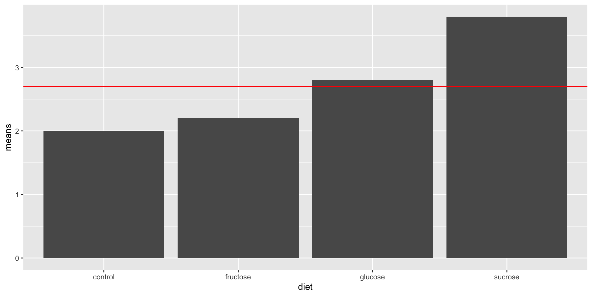

| control | sucrose | glucose | fructose |
|---|---|---|---|
| 2.3 | 3.6 | 2.9 | 2.1 |
| 1.7 | 4.0 | 2.7 | 2.3 |
Inference for ANOVA
Announcements
- Grades posted for HW1a and HW1b
- Homework 2 posted
- Office hours (Bass 412)
- Thursday: 2:45p - 4:00p
- Friday: 10:50a - 12:05p
- Where to get HW help
- Spinelli center tutoring Sun-Thurs 7-9p, Sabin-Reed 301. Silvia (Sun, Mon, Wed, Thurs) and Elaine (Tue) can help with 290!
Assembly Line Metaphor
- You book used the CAT scan metaphor: \[Body = Skeleton + Organ\:System + Everything\:Else\]
- I prefer the assembly line metaphor, but whatever makes sense to you!
Simulation in R: Assembly Line Metaphor
Leafhopper survival
One-Way Design
It is reasonable to assume that the structure of a sugar molecule has something to do with its food value. An experiment was conducted to compare the effects of four sugar diets on the survival of leafhoppers. The four diets were glucose and fructose (6-carbon atoms), sucrose (12-carbon), and a control (2% agar). The experimenter prepared two dishes with each diet, divided the leafhoppers into eight groups of equal size, and then randomly assigned them to dishes. Then she counted the number of days until half the insects had died in each group.
Decomposing the data
- Let’s draw a factor diagram, including a place for the grand mean and residuals.
Leafhoppers
Bar graph of treatment condition averages.

Leafhoppers
- We’ll now start thinking about if those differences in treatment effects are real, or could possibly be due to chance error.
- To the factor diagram, let’s add in the grand mean, the effects for diet, and the residuals
| X. | control | sucrose | glucose | fructose |
|---|---|---|---|---|
| 2.3 | 3.6 | 2.9 | 2.1 | |
| 1.7 | 4.0 | 2.7 | 2.3 | |
| means | 2.0 | 3.8 | 2.8 | 2.2 |
One-way ANOVA Model
\[Y = f(X) + \epsilon\] For t-test our model is: \[Y = \mu_i + \epsilon\] For One-Way ANOVA our model is: \[Y = \mu + \alpha_i + \epsilon\] where \(\mu\) is the grand mean, \(\alpha_i\) is the treatment effect (difference from the grand mean for the \(i^{th}\) group), and \(\epsilon\) is the residual.
Note about using SLR for categorical variables
When we have a binary explanatory variable, X, where X is an indicator of category 2:
\[Y = \beta_0+\beta_1X_{indicator}+\epsilon\] where \(\beta_0\) is the mean of category 1, and \(\beta_1\) is the difference between the mean of category 1 and the mean of category 2.
Analysis of Variance (ANOVA)
Formal ANOVA starts with the simple idea that we can compare our estimate of treatment effect variability to our estimate of chance error variability to measure how large our treatment effect is.
\[Variability\:in\:Treatment\:E\mathit{f}\mathit{f}ects = True\:E\mathit{f}\mathit{f}ect\:Di\mathit{f}\mathit{f}erences + Error\] \[Variability\:in\:Residuals = Error\]
We can construct a comparison, which we will call F:
\[F = \frac{Variability\:in\:Treatment\:E\mathit{f}\mathit{f}ects}{Variability\:in\:Residuals}=\frac{True\:E\mathit{f}\mathit{f}ect\:Di\mathit{f}\mathit{f}erences + Error}{Error}\]
If our null hypothesis, \({H}_{0}: True\:E\mathit{f}\mathit{f}ect\:Di\mathit{f}\mathit{f}erences=0\), is true, then what would we expect the F-ratio to equal?
Sum of Squares (SS)
ANOVA measures variability in treatment effects with the sum of squares (\(SS\)) divided by the number of units of unique information (\(df\)). For the One-Way design:
\[{SS}_{Treatments} = n\sum_{i=1}^{a}(\bar{y}_{i.}-\bar{y}_{..})^{2}\]
\[{SS}_{E} = \sum_{i=1}^{a}\sum_{j=1}^{n}({y}_{ij}-\bar{y}_{i.})^{2}\]
\[{SS}_{Total} = {SS}_{Treatments} + {SS}_{E}\]
where \(n\) is the group size, and \(a\) is the number of treatments.
Degrees of Freedom (df)
The \(df\) for a table equals the number of free numbers, the number of slots in the table you can fill in before the pattern of repetitions and adding to zero tell you what the remaining numbers have to be.
\[{df}_{Treatments}=a-1\]
\[{df}_{E}=N-a\]
Mean Squares (MS)
The ultimate statistic we want to calculate is \(F = \frac{Variability\:in\:Treatment\:E\mathit{f}\mathit{f}ects}{Variability\:in\:Residuals}\).
Variability in treatment effects: \[{MS}_{Treatments}=\frac{{SS}_{Treatments}}{{df}_{Treatments}}\]
Variability in residuals \[{MS}_{E}=\frac{{SS}_{E}}{{df}_{E}}\]
F-ratios and the F-distribution
Finally, the ratio of these two MS’s is called the F ratio. The following quantity is our test statistic for the null hypothesis that there are no treatment effects.
\[F = \frac{{MS}_{Treatments}}{{MS}_{E}}\]
If the null hypothesis is true, then F is a random variable \(\sim F({df}_{Treatments}, {df}_{E})\). The F-distribution.
qplot(x = rf(500, 3, 4), geom = "density")Inference Testing in ANOVA
\[{H}_{0}:\mu_1=\mu_2=\mu_3=\mu_4\]
OR, \({H}_{0}:\alpha_1=\alpha_2=\alpha_3=\alpha_4=0\)
\[{H}_{A}:some\:\mu_i\neq\mu_j\]
Or \(H_a: Some\:\alpha_i\neq 0\). We can find the p-value for our F calculation with the following code
pf(17.422, 3, 4, lower.tail = FALSE)ANOVA Source Table
mod <- lm(days ~ diet, data = leaf)
anova(mod)Analysis of Variance Table
Response: days
Df Sum Sq Mean Sq F value Pr(>F)
diet 3 3.92 1.3067 17.422 0.009248 **
Residuals 4 0.30 0.0750
---
Signif. codes: 0 '***' 0.001 '**' 0.01 '*' 0.05 '.' 0.1 ' ' 1